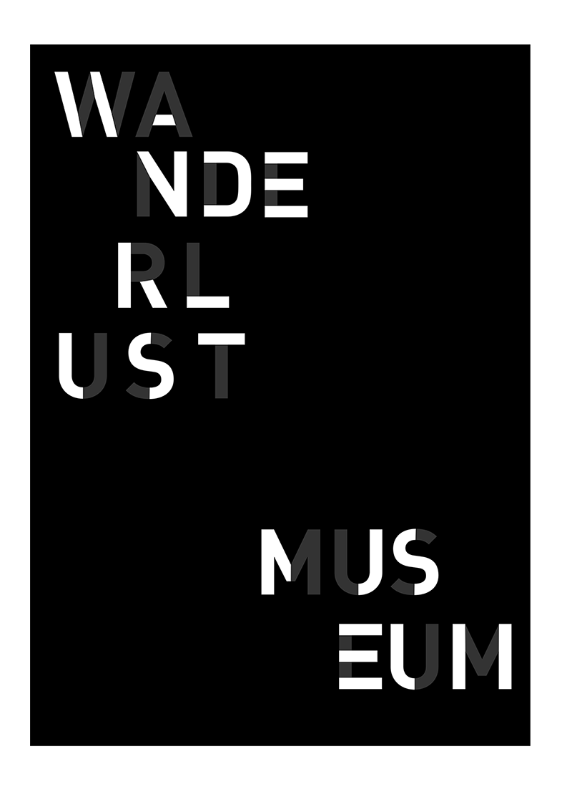
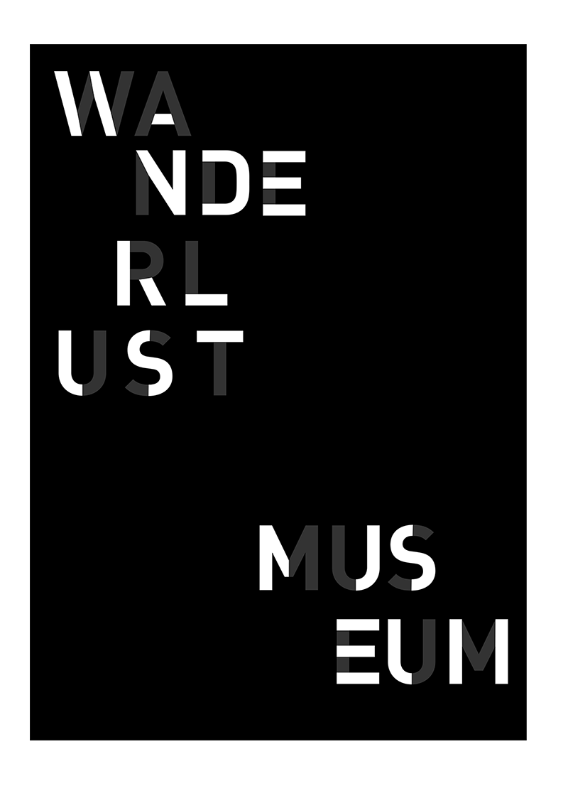

Wanderlust Museum
Brand Identity
Telling a journey of the spirit of adaptation, of the desire to know onself, of discovery. A journey full of inexhaustible surprises, in which we move from one place to another and that could make us rediscover different from what we believed to be.
Brand Identity



Software Illustrator InDesign Photoshop
Typography Din Pro
Colors #000000 #0041ff
Where Unirsm
Who Giorgia Ballante